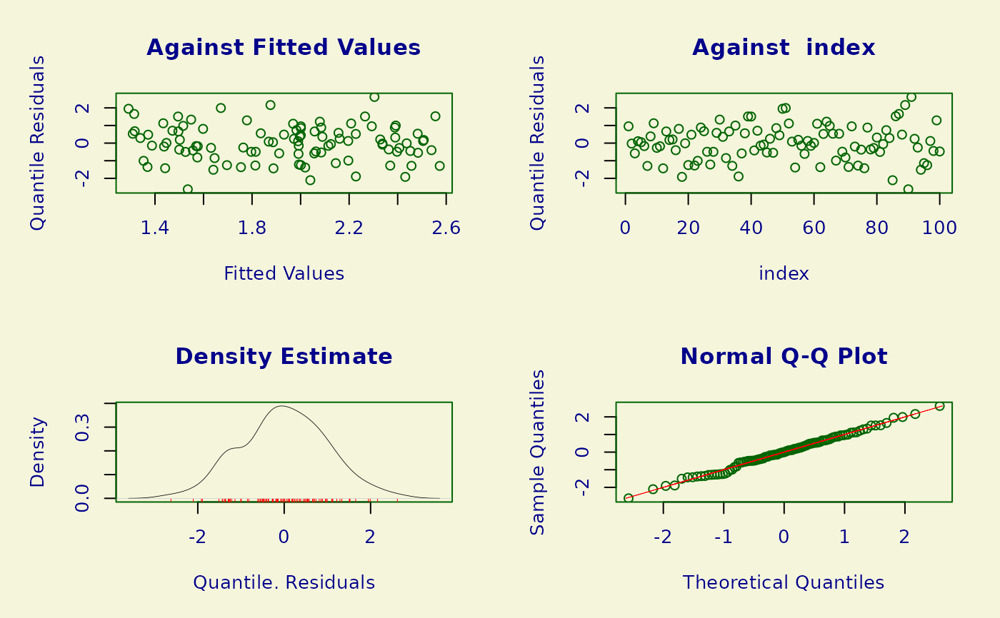

The functions GEVfisher() and GEVquasi() each define the generalized
extreme value (GEV) family distribution, a three parameter distribution, for
a gamlss.family object to be used in GAMLSS
fitting using the function gamlss. The only difference
between GEVfisher() and GEVquasi() is the form of scoring method used to
define the weights used in the fitting algorithm. Fisher's scoring,
based on the expected Fisher information is used in GEVfisher(), whereas
a quasi-Newton scoring, based on the cross products of the first derivatives
of the log-likelihood, is used in GEVquasi(). The functions
dGEV, pGEV, qGEV and rGEV define the density, distribution function,
quantile function and random generation for the specific parameterization of
the generalized extreme value distribution given in details below.
Usage
GEVfisher(mu.link = "identity", sigma.link = "log", nu.link = "identity")
GEVquasi(mu.link = "identity", sigma.link = "log", nu.link = "identity")
dGEV(x, mu = 0, sigma = 1, nu = 0, log = FALSE)
pGEV(q, mu = 0, sigma = 1, nu = 0, lower.tail = TRUE, log.p = FALSE)
qGEV(p, mu = 0, sigma = 1, nu = 0, lower.tail = TRUE, log.p = FALSE)
rGEV(n, mu = 0, sigma = 1, nu = 0)Arguments
- mu.link
Defines the
mu.link, with"identity"link as the default for themuparameter.- sigma.link
Defines the
sigma.link, with"log"link as the default for thesigmaparameter.- nu.link
Defines the
nu.link, with"identity"link as the default for thenuparameter.- x, q
Vector of quantiles.
- mu, sigma, nu
Vectors of location, scale and shape parameter values.
- log, log.p
Logical. If
TRUE, probabilitieseqn{p}are given as \(\log(p)\).- lower.tail
Logical. If
TRUE(the default), probabilities are \(P[X \leq x]\), otherwise, \(P[X > x]\).- p
Vector of probabilities.
- n
Number of observations. If
length(n) > 1, the length is taken to be the number required.
Value
GEVfisher() and GEVquasi() each return a
gamlss.family object which can be used
to fit a regression model with a GEV response distribution using the
gamlss function. dGEV() gives the density,
pGEV() gives the distribution function, qGEV() gives the quantile
function, and rGEV() generates random deviates.
Details
Refer to Chapter 3 of Coles (2001) and Jenkinson (1955).
GEV(\(\mu, \sigma, \xi\)). \(\nu = \xi\).
Give the pdf and/or cdf.
Explain the initial estimates.
Add code for the mean and variance.
Examples
# Simulate some data
set.seed(17012023)
n <- 100
x <- stats::runif(n)
mu <- 1 + 2 * x
sigma <- 1
xi <- 0.25
y <- nieve::rGEV(n = 1, loc = mu, scale = sigma, shape = xi)
plot(x, y)
# Fit model
data <- data.frame(y = as.numeric(y), x = x)
library(gamlss)
#> Loading required package: splines
#> Loading required package: gamlss.data
#>
#> Attaching package: ‘gamlss.data’
#> The following object is masked from ‘package:datasets’:
#>
#> sleep
#> Loading required package: gamlss.dist
#> Loading required package: nlme
#> Loading required package: parallel
#> ********** GAMLSS Version 5.4-22 **********
#> For more on GAMLSS look at https://www.gamlss.com/
#> Type gamlssNews() to see new features/changes/bug fixes.
mod <- fitGEV(y ~ pb(x), data = data)
#> stepLength = 1
#> GAMLSS-RS iteration 1: Global Deviance = 323.1514
#> GAMLSS-RS iteration 2: Global Deviance = 320.4992
#> GAMLSS-RS iteration 3: Global Deviance = 320.1412
#> GAMLSS-RS iteration 4: Global Deviance = 320.091
#> GAMLSS-RS iteration 5: Global Deviance = 320.0839
#> GAMLSS-RS iteration 6: Global Deviance = 320.0829
plot(mod)

#> ******************************************************************
#> Summary of the Quantile Residuals
#> mean = -0.0005858247
#> variance = 1.00992
#> coef. of skewness = -0.007497414
#> coef. of kurtosis = 2.780556
#> Filliben correlation coefficient = 0.9973717
#> ******************************************************************
plot(data$x, data$y)
# Converges
modRS <- fitGEV(y ~ pb(x), data = data, method = RS())
#> stepLength = 1
#> GAMLSS-RS iteration 1: Global Deviance = 323.1514
#> GAMLSS-RS iteration 2: Global Deviance = 320.4992
#> GAMLSS-RS iteration 3: Global Deviance = 320.1412
#> GAMLSS-RS iteration 4: Global Deviance = 320.091
#> GAMLSS-RS iteration 5: Global Deviance = 320.0839
#> GAMLSS-RS iteration 6: Global Deviance = 320.0829
# Throws an error: parameters out-of-bounds leads to Inf deviance
if (FALSE) {
modCG <- fitGEV(y ~ pb(x), data = data, method = CG())
}
# Can we avoid the problem by halving the step lengths?
modCG <- fitGEV(y ~ pb(x), data = data, method = CG(),
control = gamlss.control(mu.step = 0.5, sigma.step = 0.5, nu.step = 0.5))
#> stepLength = 1
#> GAMLSS-CG iteration 1: Global Deviance = 337.4163
#> GAMLSS-CG iteration 2: Global Deviance = 322.5637
#> GAMLSS-CG iteration 3: Global Deviance = 321.03
#> GAMLSS-CG iteration 4: Global Deviance = 320.4416
#> GAMLSS-CG iteration 5: Global Deviance = 320.2167
#> GAMLSS-CG iteration 6: Global Deviance = 320.1324
#> GAMLSS-CG iteration 7: Global Deviance = 320.1011
#> GAMLSS-CG iteration 8: Global Deviance = 320.0896
#> GAMLSS-CG iteration 9: Global Deviance = 320.0855
#> GAMLSS-CG iteration 10: Global Deviance = 320.0839
#> GAMLSS-CG iteration 11: Global Deviance = 320.0834
modMixed <- fitGEV(y ~ pb(x), data = data, method = mixed())
#> stepLength = 1
#> GAMLSS-RS iteration 1: Global Deviance = 323.1514
#> GAMLSS-CG iteration 1: Global Deviance = 320.1911
#> GAMLSS-CG iteration 2: Global Deviance = 320.0855
#> GAMLSS-CG iteration 3: Global Deviance = 320.083
#> GAMLSS-CG iteration 4: Global Deviance = 320.0828